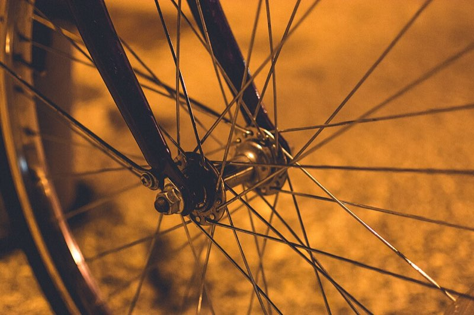

How we build a bike
6 steps, 1 bike
The bike line
Every bike goes along the line step by step. Follow the red arrows!
-
Cut the tubes
Long metal tubes are cut to the right length for the frame.
-
Weld the frame
Welding melts the metal at the joins, so the tubes become one strong frame.
-
Paint it
Colour powder is sprayed on. Then an oven bakes it into a hard, shiny coat.
-
Build the wheels
Thin spokes join the hub in the middle to the rim on the outside.
-
Put it together
Wheels, chain, pedals, brakes, saddle and bell go on the frame.
-
Test ride
A tester rides every bike and checks the brakes twice. Ready!

Why so many spokes?
A bike wheel is mostly empty space! The thin spokes pull the rim in from all sides, so they share the weight of the rider. Many wheels have 32 or 36 spokes.
We check every wheel on a truing stand, a machine that shows where it wobbles, before it goes on a bike.
Our machines
-
Running
Tube cutter
A spinning saw blade cuts steel and aluminium tubes.
- Station 1
- Wear Ear protectors
-
Running
Welding robot "Sparky"
A robot arm welds the same join in the same place, again and again.
- Station 2
- Wear Dark safety glasses
-
Running
Paint oven
It bakes the powder paint hard at about 200 degrees Celsius.
- Station 3
- Wear Heat gloves
-
Running
Truing stand
It shows the wheel builder where a wheel wobbles, so it can be fixed.
- Station 4
- Wear A steady hand